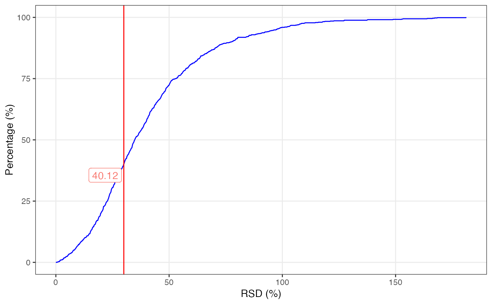
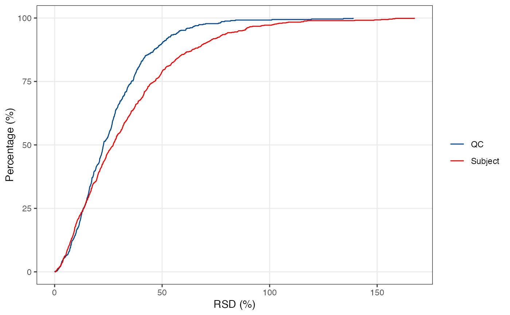
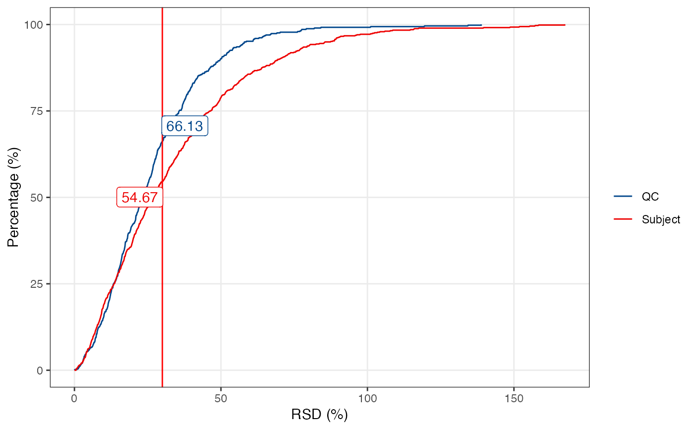
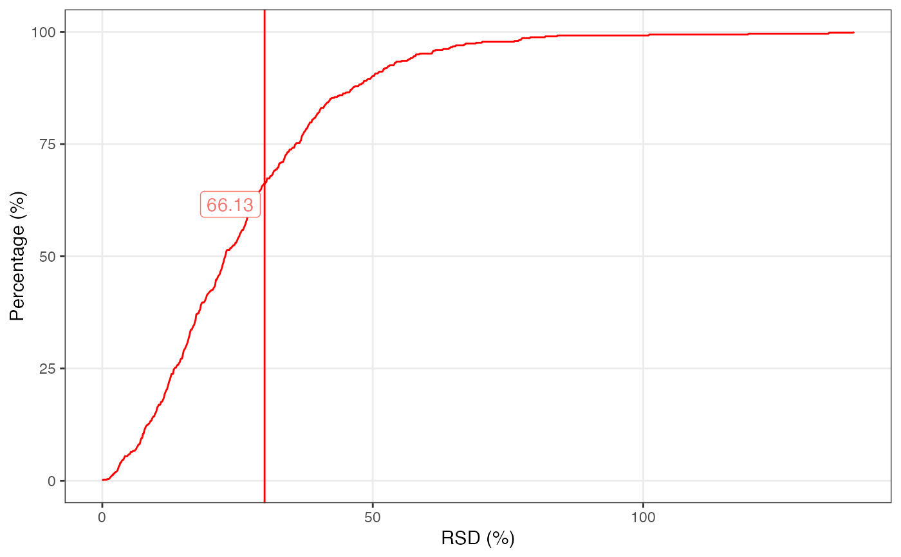
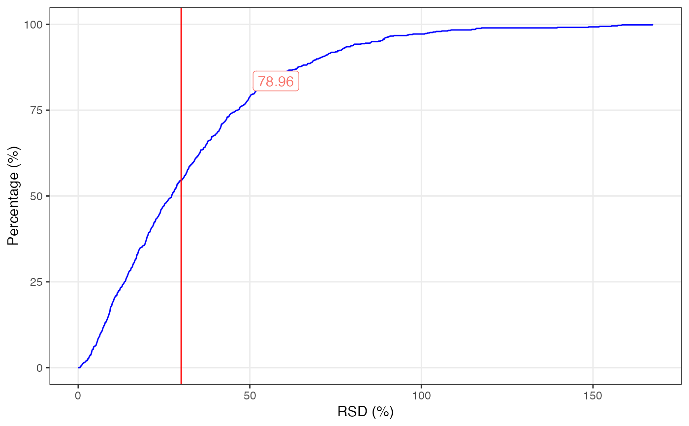

massqc_cumulative_rsd_plot
massqc_cumulative_rsd_plot(..., title, rsd_cutoff, color)one or more mass_dataset object
missing or same length (character vector) with ...
numeric
when one mass_dataset, the line color
ggplot2 plot.
library(massdataset)
library(ggplot2)
library(tidyverse)
#> ── Attaching packages ─────────────────────────────────────── tidyverse 1.3.1 ──
#> ✔ tibble 3.1.3 ✔ dplyr 1.0.7
#> ✔ tidyr 1.1.3 ✔ stringr 1.4.0
#> ✔ readr 2.0.0 ✔ forcats 0.5.1
#> ✔ purrr 0.3.4
#> ── Conflicts ────────────────────────────────────────── tidyverse_conflicts() ──
#> ✖ tidyr::extract() masks magrittr::extract()
#> ✖ dplyr::filter() masks massdataset::filter(), stats::filter()
#> ✖ dplyr::lag() masks stats::lag()
#> ✖ purrr::set_names() masks magrittr::set_names()
data("expression_data")
data("sample_info")
data("variable_info")
object =
create_mass_dataset(
expression_data = expression_data,
sample_info = sample_info,
variable_info = variable_info
)
massqc_cumulative_rsd_plot(object, rsd_cutoff = 30, color = "blue")

object1 =
object %>%
activate_mass_dataset(what = "sample_info") %>%
dplyr::filter(class == "QC")
object2 =
object %>%
activate_mass_dataset(what = "sample_info") %>%
dplyr::filter(class == "Subject")
massqc_cumulative_rsd_plot(object1, object2,
title = c("QC", "Subject")) +
ggsci::scale_color_lancet()

massqc_cumulative_rsd_plot(object1,
object2,
rsd_cutoff = 30,
title = c("QC", "Subject")) +
ggsci::scale_color_lancet()

massqc_cumulative_rsd_plot(
object1,
title = c("QC"),
color = "red",
rsd_cutoff = 30
)

massqc_cumulative_rsd_plot(
object2,
title = c("Subject"),
color = "blue",
rsd_cutoff = 50
)
